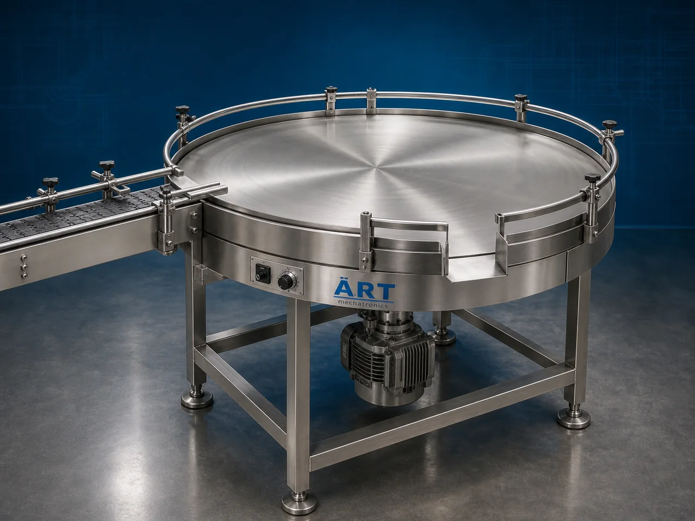

Rotary Collecting Table Machine (Industrial Rotating Packet Collection & Sorting System)
A Rotary Collecting Table Machine, also known as a Rotary Accumulation Table, Rotating Collection Table, Packet Collection Table, or Industrial Sorting Table, is an industrial automation support equipment designed for high-speed packet collection, accumulation, sorting, grading, inspection, packing, and manual handling operations in packaging and production lines.

About the Rotary Collecting Table
Rotary collecting table systems are widely used for:
- Packet collection operations
- Product accumulation systems
- Manual sorting and grading
- Packaging line support
- Carton filling operations
- High-speed production handling
The machine improves:
- Production line efficiency
- Packet collection management
- Labor convenience
- Sorting speed
- Workflow organization
- Material handling productivity
Industrial rotary collecting tables use:
- Motorized rotating table systems
- Circular accumulation platforms
- Variable speed drive systems
- Continuous rotating motion
to allow products or packets to accumulate smoothly while operators perform manual sorting and packing operations efficiently.
Rotary collecting table machines are widely used in industries such as:
Pan masala & mouth freshener industries
Tobacco industries
Food processing industries
Snack industries
Pharmaceutical industries
Packaging industries
FMCG industries
Confectionery industries
where high-speed packet accumulation and manual sorting operations are essential.
The machine is highly suitable for:
- Pouch collection
- Packet sorting
- Carton packing
- Product grading
- Manual inspection
- Packaging line accumulation
ART Mechatronics offers high-performance rotary collecting table machines, engineered for continuous industrial operation, smooth product accumulation, ergonomic manual handling, and reliable long-term performance.
Working Principle of Rotary Collecting Table Machine
Packets, pouches, bottles, containers, or products fall continuously from upstream production or packaging machine onto rotary table surface
Motor-driven rotating table moves products continuously in circular motion
Rotating movement prevents packet accumulation at one point and distributes products evenly across table surface.
Machine handles:
- Pouches
- Packets
- Bottles
- Containers
- Food products
- Pharma products
- FMCG items smoothly and efficiently.
Operators sitting around rotary table can: Collect packets Sort products Grade materials Inspect items Fill cartons Remove rejected products easily due to continuous rotating movement.
Table rotation speed can be adjusted according to: Production output Product type Operator handling speed Packaging line requirements
Rotary collecting table supports uninterrupted production and downstream packing operations
Types of Rotary Collecting Table Machines
- 1. Packet Collection Rotary Table
Designed for: ✔ Pouch and packet collection applications
- 2. Bottle Accumulation Table
Suitable for: ✔ Bottle and container collection systems
- 3. Food Grade Rotary Collecting Table
Uses: ✔ Hygienic stainless steel construction for food and pharmaceutical industries.
- 4. Heavy Duty Rotary Sorting Table
Designed for: ✔ High-speed industrial product handling systems
- 5. Inspection & Grading Rotary Table
Suitable for: ✔ Manual product inspection and sorting applications
- 6. Packaging Line Rotary Collection Table
Designed for: ✔ High-speed packaging line accumulation systems
Industries Using Rotary Collecting Table Machines
🌿 Pan Masala & Mouth Freshener Industry High-speed pouch collection and carton packing systems 🚬 Tobacco Industry Tobacco pouch and packet sorting systems 🍃 Food Processing Industry Snack and food packet accumulation systems 🍟 Namkeen & Snack Industry Chips and namkeen pouch collection systems 💊 Pharmaceutical Industry Medicine pouch and bottle handling systems 📦 Packaging Industry Packaging line collection and sorting systems 🛒 FMCG Industry Consumer product accumulation and packing systems 🍬 Confectionery Industry Candy and confectionery packet handling systems
Features & Advantages
- Efficient high-speed packet accumulation system
- Smooth rotating product handling operation
- Improves labor productivity and sorting efficiency
- Continuous packaging line support
- Adjustable table rotation speed
- Heavy-duty industrial construction
- Hygienic food-grade design options available
- Easy operation and low maintenance
- Suitable for manual inspection and packing operations
Technical Highlights
Table Type: Rotary accumulation table Rotating sorting table Packet collection table Circular packing table Construction: Stainless Steel (SS304 / SS316) Mild Steel (MS) Drive System: Geared motor drive Variable speed control system Features: Adjustable rotation speed Food-grade surface Ergonomic working height Conveyor integration Automation: Semi-automatic Fully automatic integrated systems
Turnkey Rotary Collecting Table Solutions
ART Mechatronics offers: Complete rotary collecting table systems Packaging line accumulation solutions Conveyor and packaging integration systems Manual sorting and grading support systems Installation & commissioning After-sales service & AMC
Why Choose Art Mechatronics
Expertise in industrial packaging and material handling systems Customized rotary collecting table solutions for multiple industries High-performance and durable industrial construction Smooth and reliable product accumulation systems Proven industrial performance across sectors
Applications
Pan Masala Manufacturing Plants Tobacco Processing Units Food Processing Industries Packaging Facilities Pharmaceutical Manufacturing Units FMCG Production Plants
Related Conveying & Handling machines
Get pricing & specs for the Rotary Collecting Table
Share the product, target capacity, current process and plant location. These details help our engineers discuss the right machine or line configuration.
One partner, from design to start-up
ART Mechatronics designs, manufactures, installs and commissions your Rotary Collecting Table solution with regional presence in India, UAE and Thailand.